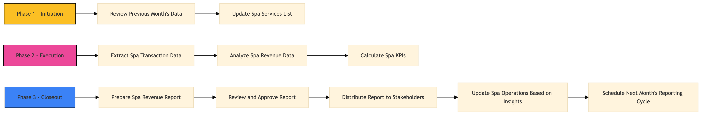

| Role | Steps |
|---|---|
| Revenue Manager | 1.1 3.1 3.3 3.5 |
| Spa Director | 1.2 2.3 3.2 3.4 |
| Revenue Analyst | 2.1 2.2 |
| Step | Name | Role | System | Input | Output | KPI | Dec? | Exc? | Pain Point / Risk |
|---|---|---|---|---|---|---|---|---|---|
| 1.1 | Review Previous Month's Data | Revenue Manager | Oracle OPERA Cloud | Previous month's spa transaction data | Data review notes | Less than 2 hours | N | Y | Handling large volumes of data and identifying discrepancies |
| 1.2 | Update Spa Services List | Spa Director | Oracle OPERA Cloud | Current spa menu and services | Updated services list in Oracle OPERA Cloud | Less than 30 minutes | N | Y | Ensuring all services are accurately reflected |
| 2.1 | Extract Spa Transaction Data | Revenue Analyst | Oracle OPERA Cloud | Monthly transaction data from Oracle OPERA Cloud | Spa transaction report | Less than 2 hours | N | Y | Data extraction issues and ensuring accuracy |
| 2.2 | Analyze Spa Revenue Data | Revenue Analyst | Microsoft Power BI | Spa transaction report | Revenue analysis dashboard | Less than 3 hours | N | Y | Complex data analysis and identifying trends |
| 2.3 | Calculate Spa KPIs | Revenue Analyst | Microsoft Power BI | Revenue analysis dashboard | KPI report | Less than 1 hour | N | Y | Accurate calculation of KPIs and ensuring alignment with targets |
| 3.1 | Prepare Spa Revenue Report | Revenue Manager | Microsoft Word/Excel | KPI report and revenue analysis dashboard | Spa revenue report | Less than 4 hours | N | Y | Formatting the report for presentation |
| 3.2 | Review and Approve Report | Spa Director | Microsoft Word/Excel | Spa revenue report | Approved spa revenue report | Less than 1 hour | Y | N | Ensuring all data is accurate and aligns with business goals |
| 3.3 | Distribute Report to Stakeholders | Revenue Manager | Microsoft Outlook | Approved spa revenue report | Email sent to stakeholders | Less than 1 hour | N | Y | Ensuring all relevant parties receive the report in a timely manner |
| 3.4 | Update Spa Operations Based on Insights | Spa Director | Oracle OPERA Cloud | Approved spa revenue report | Updated spa operations plan | Less than 2 hours | Y | N | Implementing changes based on data-driven insights |
| 3.5 | Schedule Next Month's Reporting Cycle | Revenue Manager | Microsoft Outlook | Approved spa revenue report | Scheduled email for next month's reporting cycle | Less than 1 hour | N | Y | Ensuring the process is repeated consistently |
This process involves generating and reporting on spa revenue and key performance indicators (KPIs) at a Marriott full-service hotel. The goal is to ensure accurate data collection, analysis, and reporting to support business decisions and improve guest satisfaction.